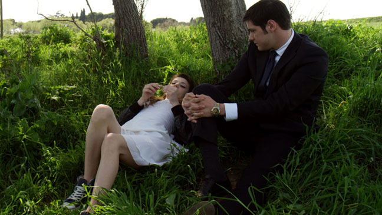
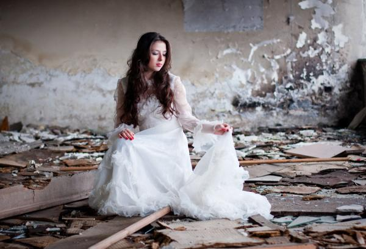
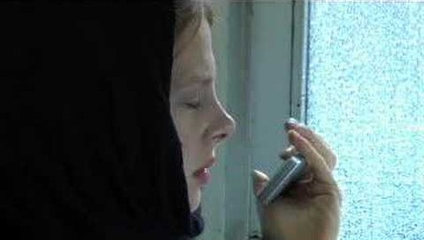

Best Ways to Propose a
Girl.
1. Be yourself
This is the first rule that you need to get into your
mind when you think of proposing a girl. Do not overdo your proposal. Keep it
simple yet special and sweet. Listen up fellas if you want to capture your
woman’s heart by a marriage proposal, then follow your heart and hers. Be
creative, and be yourself. Its every girls dream to have a guy propose to her.
Be who you are, and in your own special way say those three golden words.
2. Candle lit Dinner
This is a classic but one of great ways to propose
your dream girl. Candles are one of the quintessential elements of a romantic
evening. The dim lights of the candles burning flames and the romantic tunes
sets one of the perfect settings for a romantic proposal. A candle lit dinner is
a romantic way to propose to anyone who holds a special place in your heart and
the one you want to spend the rest of your life with. Guys set the mood, by
preparing and cooking your significant other their favorite dinner. Turn off all
lights and lit the candles, play romantic songs. The glowing of the candles sets
a mood for a night full of romance and is one of the most perfect scenes to
propose. It will set the mood for love and romance.
3. Place Where You Met First Time

Take her to the place where you met each other for the
first time. Recreate the same moment and then propose to her. It will definitely
move her and get embossed on her memory for lifetime. Its one of the romantic
ways to propose. Here some useful tips for your first date.
4. Special Day

What better way to propose to the woman of your dreams
is on Valentines Day, Christmas Day, Eid Day, Holly or Dewali Day. Corny but
very romantic. Yes I realize a lot of you guys propose on ‘Valentines Day‘
because it is a national holiday and a romance filled day. But to make the
proposal extra special, propose on a causal day. Pick a day that has special
meaning to you both, such as a birthday, anniversary of your friendship or the
day when you went for your first date and etc. A proposal isn’t something to
take lightly. For a guy to remember special days such as the anniversary of
friendship or first date and to propose on that particular day is a special
proposal to a woman. A marriage proposal is a commitment between two people who
are deeply, passionately in love.
5. Proposal During a Movie Break

The very romantic and easy ways to propose your
beloved. This way of proposing is tried and tested and it works, really. Edit
and compile a short lovely movie which pop up the special question and screen it
during the interval. It should be fun to see her reaction.
6. T-shirt Proposal
Get a t-shirt with the text “will you marry me” or “Do
You Love Me” and wear a jacket over it, take her to a nearby park or a place you
usually meet up and get down on your knees and reveal your special tee to her.
7. Picnic in the Park
This is a simple but romantic ways to propose to the
woman you love. What better way to propose to the woman of your dreams is by
sticking her engagement ring inside the chocolate covered strawberry. Plan a
perfect plan for a picnic. A nice and beautiful scene, Green hills and valleys
and your loved one lying on your chest. This romantic moment can be made more
beautiful chocolates covered with strawberry, bucket of a chilling champagne.
You can stick ring with the choclate wrapper and cover it with strawberry for
proposing your girlfriend for marriage. You can make this picnic even more
beautiful by singing a romantic song for your loved ones.
8. Radio Proposal
The girls love brave guyes. Any girl would love the
guy who propose her would have the guts to propose in front of thousands of
people listening over the radio waves.
If you know she listens to the radio at a certain time
everyday, making a dedication will work charms with her. Call your local FM
radio station, one you know she will be tuning into. What would you say on the
radio? That is clearly up to you. But it should be something memorable and
sweet. Dedicate you beloved, her fevorite romantic song. Have the radio play you
and your “song,” together, and a sweet proposal following before or after the
song. Then have her phone in after the song to give her answer over the radio
waves. She definatly answer ‘YES’
9. Surprising By Hiding In A Box

This one can be easy, but a lot of coordination is
required to execute this proposal. Hiding yourself in a box wrapped with gift
paper can be a big surprise to her when you are holding a ring in your hand and
waiting to be unwrapped.
10. Banner Proposal
If you can’t express your feeling or you are afraid of
rejection then you can use banner for proposing a girl. You can get a banner
prepared with the word ‘I Love You’ and have it displayed outside her house or
in the workplace. It is advised that you do not use her real name on the banner,
but use the endearment that you generally use to call her. You can also make a
flying banner and can give surprise to your loved one by flying it over her head
and making it the most excited and memorable moment of your life. Try this way
only when you are sure that she is not going to reject your proposal.